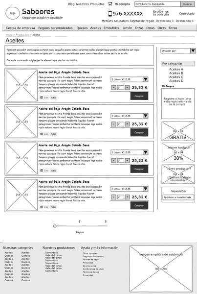
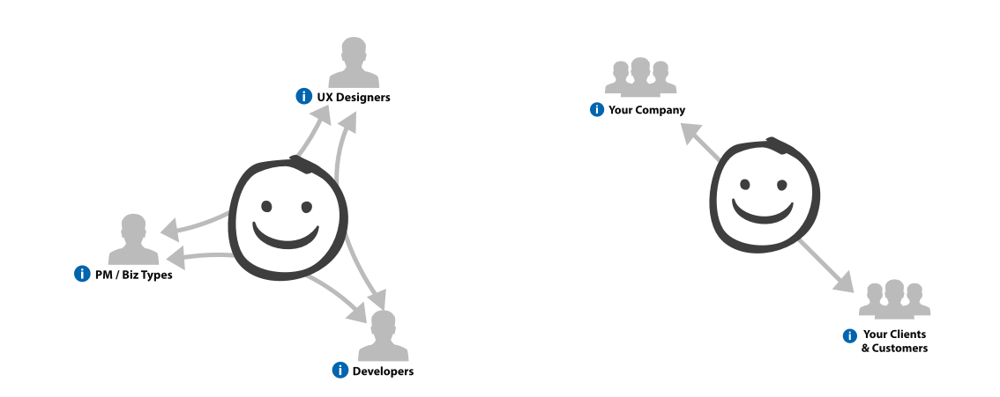
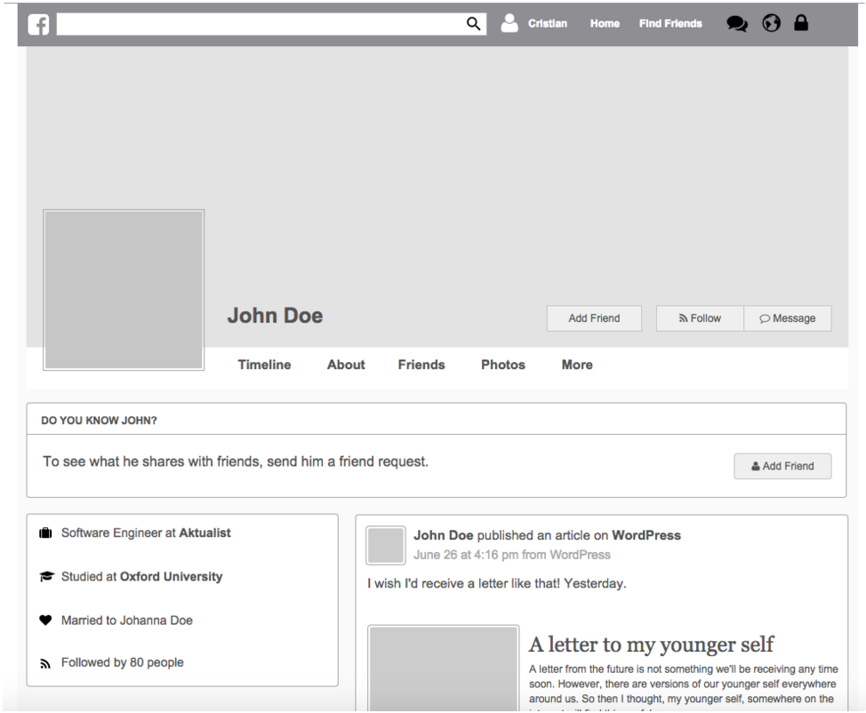
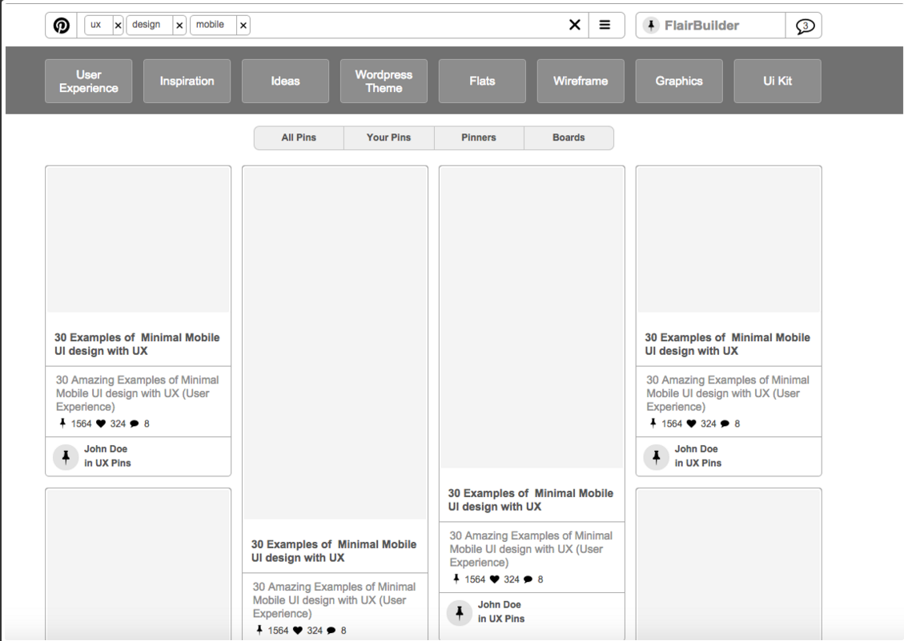
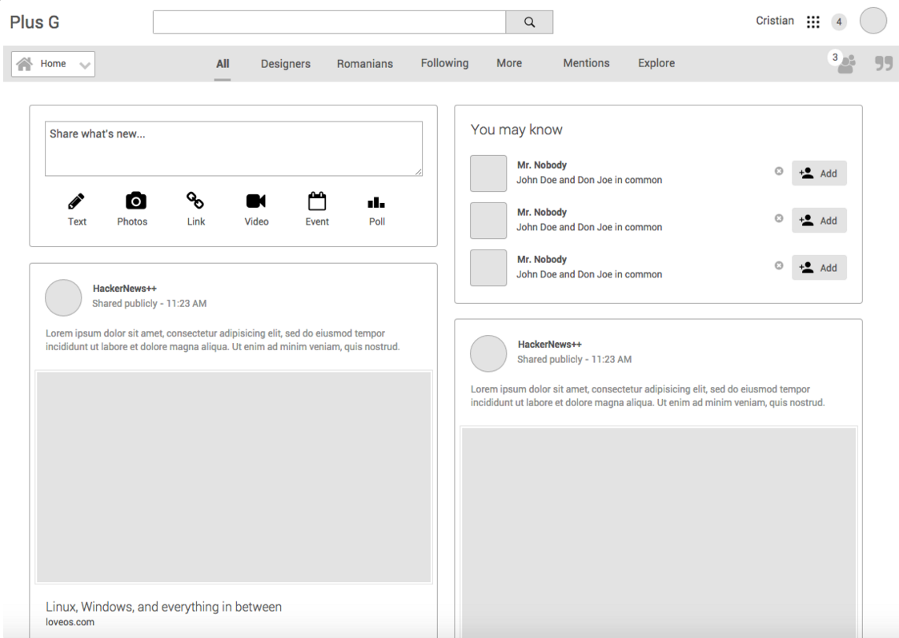
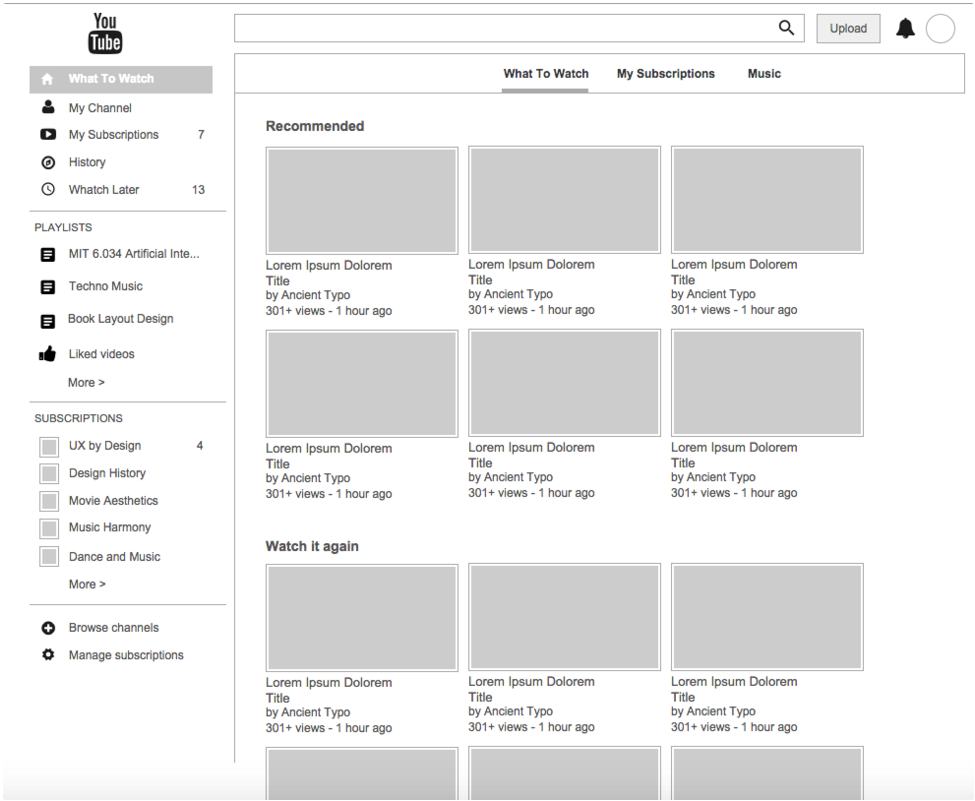

Prototipos
Definición
Los prototipos son una representación limitada de un producto.

¿Por qué un prototipo?
- Porque son útiles para comunicar, discutir y definir ideas entre los diseñadores y las partes responsables.
- Los prototipos apoyan la evaluación de productos, clarifican requisitos de usuario y definen alternativas.

Prototipos de baja fidelidad
- Utilizan materiales distintos al del producto final, son baratos, simples y fáciles de producir.
- Son particularmente útiles en las fases iniciales del desarrollo, durante el diseño conceptual.
Prototipo de alta fidelidad
Son aquellos que se parecen al producto final y utiliza sus mismos materiales.
Se desaconseja el uso de prototipos de alta fidelidad porque:
- Necesitan mucho tiempo para crearse.
- Las pruebas tienden a centrarse en aspectos superficiales.
- Los desarrolladores se resisten a cambiar algo que les ha llevado horas crear.
- Crea excesiva expectación.
- Un error puede parar un test.
Ejemplos de Prototipos
Facebook

Pinterest

Google Plus

YouTube
